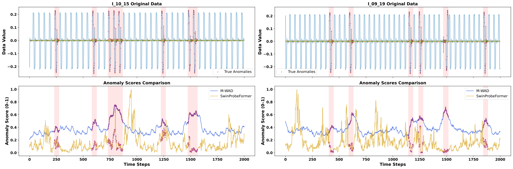

7 probing recipes
~44% F1 improvement
Problem definition
Undergain faults reduce test throughput and motivate multimodal fault detection.
My contributions
Developed a multimodal anomaly detection framework integrating time-series signals, residual-based visual representations and textual anomaly information.
Method overview
Time series + residual images + text
Multimodal framework
Fault detection

Results
Approximately 44% F1 improvement over SwinProbeFormer across seven probing recipes.

Technical focus
Multimodal learning · Time-series anomaly detection
Read publication ↗Industrial data, internal source code and non-public implementation details are not included.